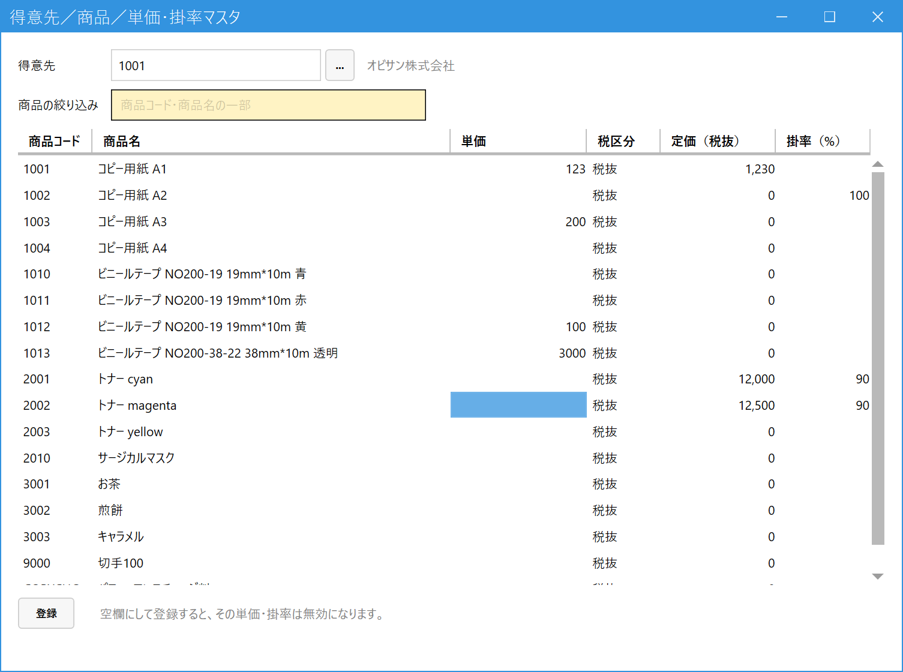
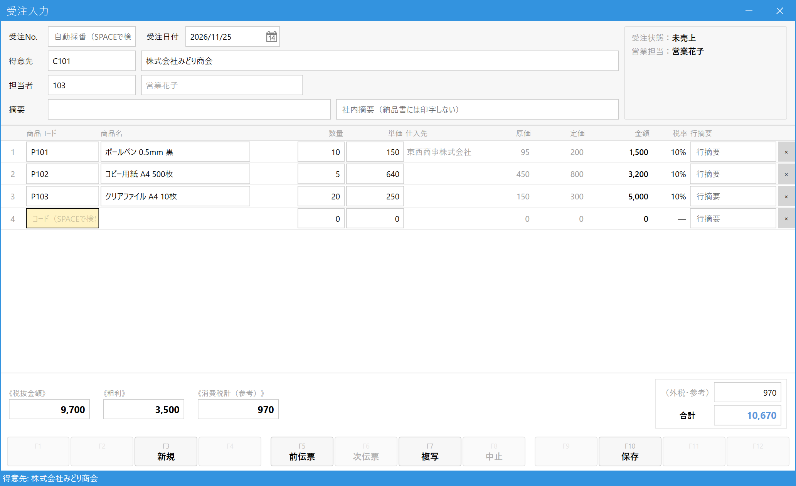
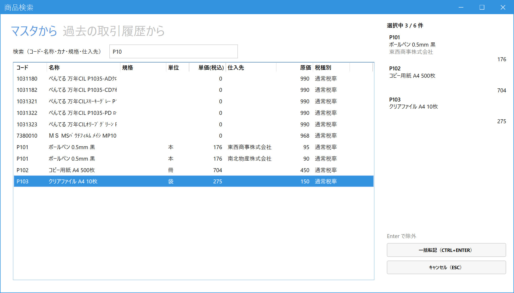

得意先ごとの単価を設定する（得意先／商品／単価・掛率マスタ）
こんなときに使います
「この得意先には、この商品を特別な単価で売る」「この得意先には定価の90%で売る」など、得意先ごとの価格の取り決めを登録します。
登録すると、受注・売上の明細に商品を入れたとき、その単価が自動で入ります。
「この得意先には、この商品を特別な単価で売る」「この得意先には定価の90%で売る」など、得意先ごとの価格の取り決めを登録します。
登録すると、受注・売上の明細に商品を入れたとき、その単価が自動で入ります。
1.単価が決まる順番
受注入力・売上入力の明細に商品を入れたとき、単価は次の順で探して、最初に見つかったものが入ります（入ったあとで、明細で書き換えることもできます）。
| 順番 | 使う値 | 明細に入る単価 |
|---|---|---|
| 1 | この画面で登録した単価 | 登録した金額がそのまま入ります（税込・税抜の換算はしません）。 |
| 2 | この画面で登録した掛率 | 商品マスタの定価（税抜）× 掛率。内税明細単位の得意先は、これに消費税を足した税込の金額です。1円未満は、得意先の端数処理（切捨・四捨五入・切上）で円にそろえます。 |
| 3 | どちらもない | 商品マスタの標準単価。内税明細単位の得意先は「標準単価（内税）」、それ以外は「標準単価（外税）」です。 |
- 同じ商品に単価と掛率の両方を登録したときは、単価が使われます。
- 単価は、得意先の税区分に合わせた金額で登録します。内税明細単位の得意先（都度取引）は税込、それ以外（請求単位・伝票単位）は税抜です（画面の「税区分」列に出ます）。
- 掛率を登録しても、商品マスタの定価が0の商品は単価0になります（標準単価には戻りません）。掛率を使う商品は、先に定価を登録してください。
- 得意先を入れる前に商品を入れると、得意先ごとの設定は使われず、標準単価（外税）が入ります。得意先を先に入れてください。
2.得意先を選ぶ
メインメニューの「マスタ管理」の中の「単価・掛率マスタ」を開き（画面名は「得意先／商品／単価・掛率マスタ」）、得意先欄にコードを入れて Enter（Space または「...」で検索）。その得意先の有効な商品が全件、一覧に並びます。

- 得意先：決めたい得意先。選ぶと、名称がとなりに表示されます。
- 商品の絞り込み：商品コード・商品名の一部で表示を絞ります（表示だけが変わります。隠れた行の入力内容も残ります）。
- 単価：この得意先への特別単価。入力できるのはこの列と掛率だけです。
- 税区分：単価を入れる基準です。得意先が内税明細単位（都度取引）なら「税込」、それ以外は「税抜」です。
- 定価（税抜）：商品マスタの定価（見るだけ）。定価が0の商品は、掛率を入れても単価は0になります。
- 掛率（%）：定価に対する割合（0〜100の整数）。例：90 → 定価の90%。
- 登録：変更した行だけをまとめて保存します。
3.入力して登録する
- 単価か掛率を入れたい商品の行に入力します（両方入れたときは、単価が優先されます）。
- 登録を押す。成功すると「登録しました」と出て、画面は空に戻ります。
- 空欄にして登録すると、その単価・掛率は無効になります（取り決めをやめるとき）。0は有効な値です（0円で売る、という意味になります）。
- 無効にした行にもう一度値を入れて登録すると、新しい値で有効に戻ります。
- 登録していない変更があるまま、得意先を選び直したり画面を閉じようとすると、確認メッセージが出ます。
- 数字でない値や範囲外の値（掛率が100を超えるなど）を入れると、商品コードを示した警告が出て、保存されません。
4.設定の例
ここからは、次の例で、受注・売上の画面にどう出るかを説明します（得意先・商品・金額はすべて架空です）。
| 商品 | 商品マスタ | 株式会社みどり商会 （20日締め・請求単位＝税抜） | 山形市立第一小学校 （都度・内税明細単位＝税込） |
|---|---|---|---|
| P101 ボールペン 0.5mm 黒 | 定価 200／標準単価 外税180・内税198 | 単価 150 | 単価 176（税込） |
| P102 コピー用紙 A4 500枚 | 定価 800／標準単価 外税700・内税770 | 掛率 80% | 掛率 80% |
| P103 クリアファイル A4 10枚 | 定価 300／標準単価 外税250・内税275 | 登録なし | 登録なし |

- P101：単価 150 を登録。この得意先には、ボールペンをいつも150円（税抜）で売ります。
- P102：掛率 80 を登録。定価 800 × 80% ＝ 640円で売ります。商品マスタの定価を変えると、これから入れる明細の単価も変わります。
- P103：何も登録していないので、商品マスタの標準単価（外税 250円）で売ります。
5.受注・売上の画面での表れ方
商品検索で、この得意先の単価が見える
受注入力（売上入力も同じ）で得意先を入れてから、明細の商品コード欄で Space を押して商品検索を開くと、「マスタから」の単価の列に、この得意先の単価が出ます。選ぶ前に、いくらで入るかを確認できます。

- 単価(税抜)：得意先の税区分に合わせて、見出しが「単価(税抜)」か「単価(税込)」になります。
- P101：登録した単価 150。仕入先ごとに2行ありますが（仕入先ごとの原価）、単価はどちらも同じです。
- P102：定価 800 × 掛率 80% ＝ 640。
- P103：登録がないので、標準単価（外税）250。
明細に単価が入る
選んだ商品を明細に入れると、商品検索に出ていた単価がそのまま単価欄に入り、金額（数量×単価）と画面下の合計・粗利が計算されます。商品コードを入力して Enter したときも、同じ単価が入ります。

- P101：登録した単価 150（標準単価 180 ではなく）。
- P102：掛率で計算した 640（となりの「定価」列に、元になった定価 800 が出ています）。
- P103：標準単価 250。
- 《税抜金額》：1,500＋3,200＋5,000 ＝ 9,700。
明細には、単価がどこから来たか（登録した単価・掛率・標準単価）の印は出ません。確かめたいときは、上の商品検索の単価の列か、この画面（単価・掛率マスタ）で確認してください。単価欄は書き換えられるので、その伝票だけ値引きするときなどは、明細の単価を直接直します（マスタは変わりません）。
内税明細単位（都度取引）の得意先では、税込の単価が入る
同じ商品でも、内税明細単位の得意先では、商品検索の見出しが「単価(税込)」になり、税込の単価が入ります。

- 見出しが「単価(税込)」になります。
- P101：登録した単価 176 がそのまま出ます（登録した値が税込なので、換算しません）。
- P102：定価 800 × 掛率 80% ＝ 640 に消費税10%を足して 704。
- P103：登録がないので、標準単価（内税）275。
- P101：176（税込）。
- P102：704（税込）。
- P103：275（税込）。合計は 1,760＋3,520＋5,500 ＝ 10,780 で、内税なので外税は0です。
単価が自動では変わらない場面
単価は、明細に商品を入れたときに一度だけ決まります。次の場面では、マスタの単価で入れ直されません。
| 場面 | 明細の単価 |
|---|---|
| 商品を入れたあとで、得意先を変えた | そのまま（前の得意先の単価のまま）。得意先を変えたら、商品を入れ直してください。 |
| 数量や日付を変えた | そのまま。 |
| 商品検索の「過去の取引履歴から」で選んだ | この得意先に前回売ったときの単価が入ります（このマスタの単価ではありません）。 |
| 受注から売上入力へ呼び出した（売上化） | 受注に入っている単価がそのまま入ります。 |
| 登録済みの伝票を開いた・複写した | 保存されている単価のまま。 |
| このマスタの単価・掛率を変えた | 登録済みの受注・売上は変わりません。これから入れる明細から新しい単価になります。 |